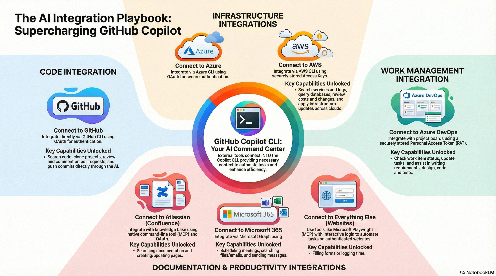
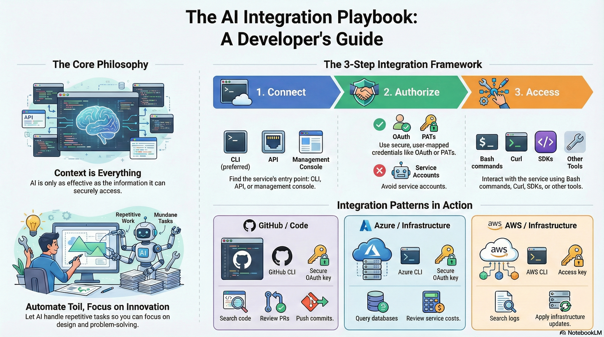

I took quick bullets to prepare to share my thoughts on AI, and I was impressed with what Google's NotebookLM generated from those notes: infographics, video, slides, and this blog content.
Before the playbook, here are the artifacts it created from that outline.
NotebookLM Artifacts
Integration infographic: a visual summary of how to connect tools and workflows.

Playbook slide: a quick visual of the core framework and principles.

Video walkthrough: a quick video recap of the playbook themes.
Why This Playbook Exists
In today's technology landscape, it is nearly impossible to escape the hype surrounding Artificial Intelligence. For professional developers, the conversation is often dominated by "prompt engineering", the art of crafting the perfect query to get a desired output. However, this focus on prompts misses the bigger picture. The true, transformative power of AI is unlocked not through clever prompts alone, but through disciplined "context engineering."
This playbook provides a practical path for developers looking to move beyond simple queries and integrate AI deeply into daily workflows. The goal is to automate the toil, the repetitive, low value tasks that consume valuable time and cognitive energy, so you can focus on the complex challenges that require human ingenuity: problem solving, architecture, and genuine innovation.
1. The Core Philosophy: Why Context Is Everything
The foundational principle is simple: an AI is only as effective as the context it is given. Success is not about tricking an algorithm with a clever phrase; it's about systematically providing it with the information it needs to act as a capable assistant.
Context Engineering vs. Prompt Engineering
Context engineering focuses on building a system that gives your AI self service access to the information it needs to act effectively on your behalf. It means connecting the AI to your repositories, work systems, and infrastructure so it can understand the full landscape of your work.
The Strategic Goal
The objective is to automate the toil. By teaching an AI how to perform routine tasks, like searching logs, updating work items, or reviewing boilerplate code, a developer's attention can remain fixed on creative and complex work.
The Recommended Toolset
Operate primarily from the terminal. IDE integrations are valuable, but the terminal offers a faster feedback loop and greater flexibility for creating and combining reusable AI skills, agents, and configurations.
2. A Systematic Framework for AI Integration
This three step framework provides a reliable method for building integrations that are secure, scalable, and powerful.
- Connection: Identify the entry point using a CLI, MCP, or API.
- Authorization: Secure access with OAuth, PATs, or basic authentication as a last resort.
- Access: Define how the AI interacts using bash, curl, MCP tools, SDKs, or wrappers.
3. The Playbook in Action: Real World Integration Patterns
Applying the framework to common tools reveals a blueprint for automation.
Code & Infrastructure Management
- Integration Path: GitHub → GitHub CLI → OAuth → Copilot CLI
- Integration Path: Azure → Azure CLI → OAuth → Copilot CLI
- Integration Path: AWS → AWS CLI → Access Keys → Copilot CLI
- Capabilities: Search code, review PRs, push commits, query services, review costs
Work & Knowledge Management
- Integration Path: Azure DevOps → PAT → Copilot CLI
- Integration Path: Atlassian → MCP → OAuth → Confluence
- Capabilities: Draft requirements, update work items, search docs, create pages
Productivity & Business Automation
- Integration Path: Microsoft 365 → Microsoft Graph → Access Token → Curl or SDK
- Integration Path: Web Automation → Microsoft Playwright MCP → Interactive Login
- Capabilities: Schedule meetings, search OneDrive/Outlook, automate web tasks
4. Operating Principles for Long Term Success
- Guide your AI partner: Be explicit, show examples, and encourage clarifying questions.
- Keep a human in the loop: Treat outputs as first drafts and review before action.
- Scale and collaborate: Save what works and share skills or scripts with your team.
- Manage resources deliberately: Balance complexity with token and context limits.
Operational Strategy and Efficiency
The playbook defines the ultimate goal of AI integration as automating toil so human attention remains on high level problem solving, design, and innovation. To achieve this, several operational principles are recommended:
- Prefer terminal environments: Using WLS (Terminal) is preferred over restricted interfaces because it offers faster feedback and greater flexibility for configuring skills and agents.
- Spec first iteration: Work spec first and maintain a human in the loop to iterate on AI outputs.
- Explicit communication: Be clear about where information lives and prompt the AI to ask clarifying questions rather than making assumptions.
Persistence and Collaborative Growth
The playbook emphasizes that successful AI interactions should not be ephemeral.
- Creating reusable skills: When a process works, save it as a Markdown file or convert it into a reusable skill.
- Shared knowledge: Collaboration happens through shared GitHub repositories where prompts, skills, and integration patterns are stored and refined.
- Deliberate management: Manage tokens and context deliberately, acknowledging trade offs in how much information is provided.
Knowing the Boundaries
A final core principle is exercising discretion and restraint. Know when not to use AI, especially for direct production changes.
Conclusion
The true potential of AI for developers is not found in mastering the art of the prompt, but in the disciplined practice of context engineering. By systematically and securely integrating AI into the tools we use every day, we can transform it from a clever conversationalist into a powerful, practical partner in our work.
The key takeaways are clear: context is king, the three step framework makes integration real, and operating principles keep the system reliable. The ultimate goal is to automate the toil so we can focus on the creative, innovative, and deeply human work of building the future.